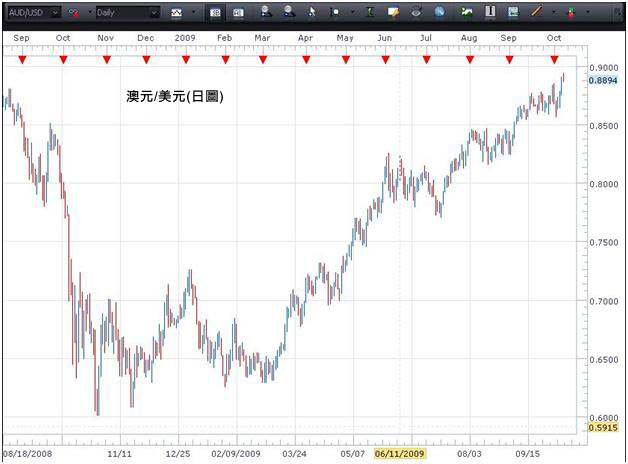
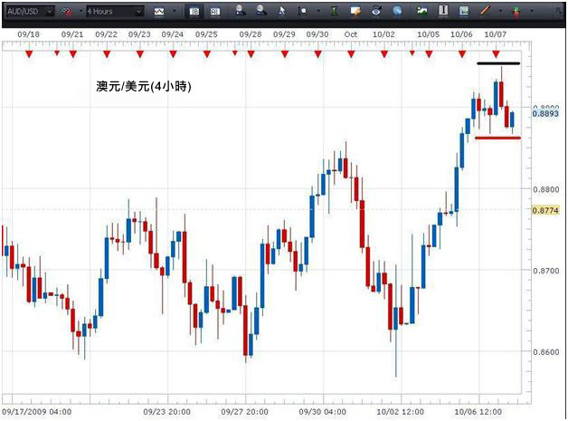
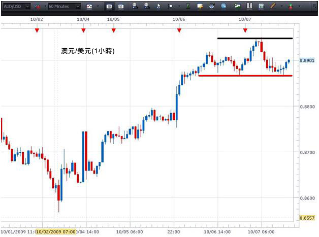

多重時間段分析是透過觀察相同貨幣對多個不同時間段圖表而分析貨幣對的方法。其優點是藉觀察較長的時間段，然後再看較短的時間段，繼而再看更短的時間段，交易者將可對貨幣對如何移動有更詳細的瞭解，從而在更有根據的情況下建立交易。
一般而言，交易者會選擇三個時間段，而有關時間段將會根據交易者的個人交易策略而定。較長線交易者可以選擇每週、每日及4小時圖。較短線交易者可以選擇4小時、1小時及15分鐘圖。重點是以當中最長線的圖表來厘定"整體趨勢"及應朝哪一個方向買賣。其後使用較短的時間段來"微調"在該個方向哪一個水準建立持倉。
您可能曾經聽說過"趨勢中存在趨勢"。例如，在日圖中，趨勢可能是一個升勢，而在4小時圖中，則可能是跌勢，在1小時圖中可能是持平… 所有趨勢都是關於同一個貨幣對。
在此情景下，整體趨勢以日圖為基礎 – 即上升。然而，在這個升勢之內，於4小時的時間段內則出現轉勢。轉勢很可能在某一點結束，而4小時時間段則與日圖趨於一致。同樣道理，在4小時時間段記憶體在1小時的趨勢。隨著1小時趨勢與4小時趨於一致，而4小時與日圖趨於一致，一個有機會更高的入市點將會出現。
總括來說，當最短的時間段完成轉勢(轉勢指我們在日圖中注意到與趨勢相反的走勢)，及開始重新朝每日趨勢的方向移動時，我們便希望建立交易。這就是我們的入市信號。
試想像它們是一個密碼鎖的制栓，全部都有次序地趨於一致。
透過使用數個時間段，交易者可以在三個不同層面上深入瞭解貨幣對，及學習運用該些資料，以成功地在時間段所示成功機率最高的時候建立交易。
現在看看澳元/美元的一些圖表。

在以上日圖，我們可以看到貨幣對正處於升勢。單憑上述資料，我們知道，我們只希望尋找買入的機會。由於現在已處於這次看升勢的最頂端，所以並非買入貨幣對的最佳時間，因為可能即將會出現轉勢。
現在就看看較短時間段的圖表能否說明這項交易。

在這個4小時圖，我們可以看到貨幣對仍然處於升勢之中(更高的最高價及更高的最低價)，以及一個支援位元已在圖表的紅線位置建立。若支援位元能夠守住，交易者可在該點建立長倉，因為貨幣對其後將會再次朝日圖升勢的方向移動。(然而，若蠟燭的收市價低於支持位，我們可等到形成另一個底部後才建立長倉。)較為保守的交易者可能會等到貨幣對突破黑線的阻力位後才建立長倉。
這裏與多重時間段分析有關的重點是在作出入市決定前，我們可以運用較短時間段圖表來仔細地研究貨幣對的買賣情況。
現在看看此貨幣對的1小時圖

從1小時圖可見，支持位(紅線)曾被多次測試。這鞏固了此一支持位可能會守得住的看法，及可能會成為再次向上攀升的起點。若收市價低於支持位，如4小時圖所示，我們可待至建立新底部後才建立長倉。然而，若要有更大的信心，交易者可待至升穿阻力位，及蠟燭的收市價高於阻力位(黑線)為止。收市價處於該水準之上，顯示買家再次控制此時間段。
藉使用澳元/美元這三個不同時間段的圖表，我們期望能顯示出交易者可如何運用多重時間段分析來加深對貨幣對如何運作的認識及如何優化在趨勢方向中入市的瞭解，並且對此獲得更大的信心。